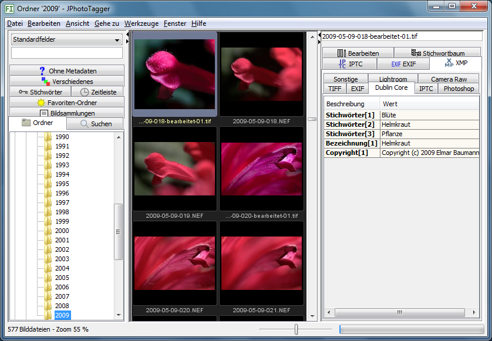
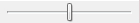
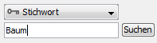

Das Programmfenster ist aufgeteilt in vier Bereiche:

Oben links und rechts des Vorschaubildfensters sind je zwei kleine Dreiecke eingezeichnet. Klicken Sie auf das Dreieck, dessen Spitze nach außen zeigt, wird das Vorschaubildfenster in diese Richtung vergrößert, auf der linken Seite werden die Auswahlkartenreiter überdeckt, auf der rechten Seite die Metadatenkartenreiter. Durch Klicken auf den Pfeil nach innen wird das Vorschaubildfenster wieder verkleinert.
Geben Sie beispielsweise Stichwörter ein, können Sie die linke Seite vergrößern und sehen so mehr Vorschaubilder.
Alle Befehle gelten für eine Auswahl, werden nur auf diese angewendet. Die Vorschaubilder in der Mitte können Sie mit der Maus auswählen:
Mit dem Regler unten können Sie die Größe der Vorschaubilder stufenlos einstellen zwischen 10 % und 100 % der eingelesenen Größe. Gute Qualität erzielen Sie, wenn Sie die Vorschaubilder groß einlesen lassen und für mehr Übersicht verkleinern.

Mit dem Tastenkürzel Strg++ (gleichzeitig Steuerung und Plus-Taste) vergrößern Sie das Bild jeweils um 10 %, mit Strg+- (gleichzeitig Steuerung und Minus-Taste) verkleinern Sie es in 10 %-Schritten innerhalb der Grenzen von 10 % bis 100 % der eingelesenen Größe.
Sie können in das Eingabefeld links oben einen Suchtext eingeben. Nachdem Sie die Enter-Taste (Return) gedrückt haben oder die Schaltfläche Suchen betätigt, wird nach dem Text gesucht, den Sie eingegeben haben. Ihre Eingaben werden automatisch vervollständigt anhand gespeicherter Metadaten. Tipp: Mit der Tastenkombination Strg+F springen Sie schnell in das Suchen-Eingabefeld.

Mehr über die Suche steht im Dokument Die Schnellsuche.
Klicken Sie mit der rechten Maustaste, klappen manchmal Kontextmenüs auf neben dem Mauszeiger und zeigen Optionen für das, was sie auswählten ("markierten") im aktiven Fenster. Bedingungen:
Sie wählen zuerst mit der linken Maustaste etwas aus und klicken dann die rechte. Unten sind zwei Kontextmenüs abgebildet.